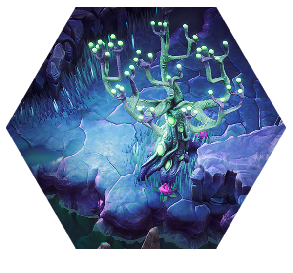

"Rempli d’une brillante lumière bioluminescente, le Weald peut sembler presque paisible par moments. Cependant, pour le vieux barbu, il est clair que la loi de la jungle s’applique toujours ici. Quand les glyphides finissent par arriver, ils sont aussi féroces que jamais."
– Description de la Sylve Azur
L’Azure Weald est une zone humide et luxuriante, remplie d’arbres, de trampolines naturels et de cristaux de soin. Marcher sur un trampoline projette un nain haut dans les airs, et lorsqu’il retombe, il détruit le terrain sous lui, repousse les insectes alentour et reçoit un bonus de hâte pendant quelques secondes. Ici, pas de Sucre Rouge : à la place, des cercles de colonnes cristallines offrent une guérison progressive lorsque le joueur (et toute créature) s’en approche.
Plusieurs nouvelles espèces de glyphides apparaissent dans cette région, notamment les Gardiens, les Mini-Exploseurs (qui remplacent les Exploseurs classiques) et les gros Prétoriens. Les taux d’apparition des ennemis diffèrent : au lieu d’un flux constant et modéré de bestioles, l’Azure Weald alterne entre des périodes relativement calmes et des pics d’apparitions massives.

| Éliminations | ||
|---|---|---|
| Niveau de Danger | Points de Biome Nécessaires | Objectifs du Biome |
| Danger 1 | 4 |
|
| Danger 2 | 13 |
|
| Danger 3 | 23 |
|
| Danger 4 | 33 |
|
| Danger 5 | 43 |
|
| Escorte | ||
|---|---|---|
| Niveau de Danger | Points de Biome Nécessaires | Objectifs du Biome |
| Danger 1 | 8 |
|
| Danger 2 |
|
|
| Danger 3 | 32 |
|
| Danger 4 |
|
|
| Danger 5 | 64 |
|